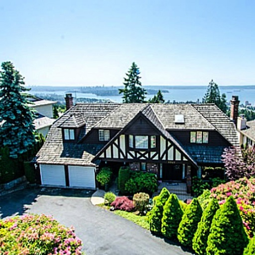

Foreigner Tax Popular
Dailyhive: TDC_ARTICLE_START
The survey shows that the highest level of support for such a ban are residents of Vancouver Island and younger generations ages 35 to 54, with each of these cohorts voicing 88% in favour.
In British Columbia and Ontario, foreign buyers taxes have been enacted by the governments in each province, which has slowed down the housing markets considerably in the Vancouver and Toronto regions over the last three to four years. Within Metro Vancouver, this interventionist policy has particularly affected the luxury segment of the residential real estate market.
BC residents agree with the 2018 decision to increase the foreign buyers tax from 15% to 20% and to expand the foreign buyers tax to areas beyond Metro Vancouver, with 79% indicating this position.
There are also similarly high proportions of British Columbians agreeing with the implementation of the speculation tax targeting foreign and domestic homeowners who pay little or no income tax in the province, and those who own second properties that are not long-term rentals (77%).
Furthermore, 76% support the new tax of 0.2% on the value of homes between $3 million and $4 million, and the tax rate of 0.4% on the portion of a home’s value that exceeds $4 million.
As well, 72% of residents agree with the decision to increase the property transfer tax from 3% to 5% for homes worth more than $3 million.TDC_ARTICLE_STOP

It's rare to see a piece of news that is actually news and not gaslighting propaganda. 78% of British Columbians support a complete ban on foreigners being allowed to buy real estate. Even I did not know it was that high. Not a tax, so the government can profit off of speculation, but an actual outright ban. 88% of Vancouver Island residents of all age groups and 88% of people between the ages of 35-54.
I have said before that banning foreigners from purchasing our property is merely the first step. That does nothing for the foreigners who have already purchased our property, and driven the prices up. The proposed NDP plan of 2% speculation tax on foreign owned properties is an absolute insult, and a scam. It exists so that the government can profit off of speculation as well. A tax of 20% is appropriate. A tax of 200% is appropriate. Seizing the property of the Chinese Billionaires who view our land as nothing more than an investment vehicle is appropriate. The purpose is supposed to be driving the price of real estate to a point where young people can actually buy land without being reduced to serfdom, and this does absolutely nothing.